深度学习¶
综述 1¶
1 引言¶
1.1 概述¶
图灵（计算机和人工智能的鼻祖，分别对应于其著名的“图灵机”和“图灵测试”）在 1950 年的论文里，提出图灵试验的设想，即，隔墙对话，你将不知道与你谈话的，是人还是电脑。这无疑给计算机，尤其是人工智能，预设了一个很高的期望值。但是半个世纪过去了，人工智能的进展，远远没有达到图灵试验的标准。这不仅让多年翘首以待的人们，心灰意冷，认为人工智能是忽悠，相关领域是“伪科学”。 但是自 2006 年以来，机器学习领域，取得了突破性的进展。图灵试验，至少不是那么可望而不可及了。至于技术手段，不仅仅依赖于云计算对大数据的并行处理能力，而且依赖于算法。这个算法就是深度学习（Deep Learning ，DL）。借助于 DL 算法，人类终于找到了如何处理“抽象概念”这个亘古难题的方法。
2012年6月，《纽约时报》披露了Google Brain项目，吸引了公众的广泛关注。这个项目是由著名的斯坦福大学的机器学习教授Andrew Ng和在大规模计算机系统方面的世界顶尖专家Jeff Dean共同主导，用16000个CPU Core的并行计算平台训练一种称为“深度神经网络”（Deep Neural Networks，DNN）的机器学习模型（内部共有10亿个节点。这一网络自然是不能跟人类的神经网络相提并论的。要知道，人脑中可是有150多亿个神经元，互相连接的节点也就是突触数更是如银河沙数。曾经有人估算过，如果将一个人的大脑中所有神经细胞的轴突和树突依次连接起来，并拉成一根直线，可从地球连到月亮，再从月亮返回地球），在语音识别和图像识别等领域获得了巨大的成功。
项目负责人之一Andrew称：“我们没有像通常做的那样自己框定边界，而是直接把海量数据投放到算法中，让数据自己说话，系统会自动从数据中学习。”另外一名负责人Jeff则说：“我们在训练的时候从来不会告诉机器说：‘这是一只猫。’系统其实是自己发明或者领悟了“猫”的概念。” 2012年11月，微软在中天津的一次活动上公开演示了一个全自动的同声传译系统，讲演者用英文演讲，后台的计算机一气呵成自动完成语音识别、英中机器翻译和中文语音合成，效果非常流畅。据报道，后面支撑的关键技术也是DNN，或者DL。
2013年1月，在百度年会上，创始人兼CEO李彦宏高调宣布要成立百度研究院，其中第一个成立的就是“深度学习研究所”（Institue of Deep Learning，IDL）。
1.2 背景¶
机器学习（Machine Learning，ML）是一门专门研究计算机怎样模拟或实现人类的学习行为，以获取新的知识或技能，重新组织已有的知识结构使之不断改善自身的性能的学科。机器能否像人类一样能具有学习能力呢？1959年美国的塞缪尔(Samuel)设计了一个下棋程序，这个程序具有学习能力，它可以在不断的对弈中改善自己的棋艺。4年后，这个程序战胜了设计者本人。又过了3年，这个程序战胜了美国一个保持8年之久的常胜不败的冠军。这个程序向人们展示了机器学习的能力，提出了许多令人深思的社会问题与哲学问题。
机器学习虽然发展了几十年，但还是存在很多没有良好解决的问题：
例如图像识别、语音识别、自然语言理解、天气预测、基因表达、内容推荐等等。目前我们通过机器学习去解决这些问题的思路都是这样的（以视觉感知为例子）：

从开始的通过传感器（例如CMOS）来获得数据。然后经过预处理、特征提取、特征选择，再到推理、预测或者识别。最后一个部分，也就是机器学习的部分，绝大部分的工作是在这方面做的，也存在很多的paper和研究。而中间的三部分，概括起来就是特征表达。良好的特征表达，对最终算法的准确性起了非常关键的作用，而且系统主要的计算和测试工作都耗在这一大部分。但，这块实际中一般都是人工完成的。靠人工提取特征。
截止现在，也出现了不少NB的特征（好的特征应具有不变性（大小、尺度和旋转等）和可区分性）：例如Sift的出现，是局部图像特征描述子研究领域一项里程碑式的工作。由于SIFT对尺度、旋转以及一定视角和光照变化等图像变化都具有不变性，并且SIFT具有很强的可区分性，的确让很多问题的解决变为可能。但它也不是万能的。

然而，手工选取特征是一件非常费力、启发式（需要专业知识）的方法，能不能选取好很大程度上靠经验和运气，而且它的调节需要大量的时间。既然手工选取特征不太好，那么能不能自动地学习一些特征呢？答案是能！深度学习（Deep Learning，DL）就是用来干这个事情的，看它的一个别名Unsupervised Feature Learning，就可以顾名思义了，Unsupervised的意思就是不要人参与特征的选取过程。
那它是怎么学习的呢？怎么知道哪些特征好哪些不好呢？我们说机器学习是一门专门研究计算机怎样模拟或实现人类的学习行为的学科。好，那我们人的视觉系统是怎么工作的呢？为什么在茫茫人海，芸芸众生，滚滚红尘中我们都可以找到另一个她。人脑那么NB，我们能不能参考人脑，模拟人脑呢？近几十年以来，认知神经科学、生物学等等学科的发展，让我们对自己这个神秘的而又神奇的大脑不再那么的陌生。也给人工智能的发展推波助澜。
2 人脑视觉机理¶
1981 年的诺贝尔医学奖，颁发给了 David Hubel（出生于加拿大的美国神经生物学家） 和TorstenWiesel，以及 Roger Sperry。前两位的主要贡献，是“发现了视觉系统的信息处理”：可视皮层是分级的。
我们看看他们做了什么。1958 年，DavidHubel 和Torsten Wiesel 在 JohnHopkins University研究瞳孔区域与大脑皮层神经元的对应关系。他们在猫的后脑头骨上，开了一个3毫米的小洞，向洞里插入电极，测量神经元的活跃程度。然后，他们在小猫的眼前，展现各种形状、各种亮度的物体。并且，在展现每一件物体时，还改变物体放置的位置和角度。他们期望通过这个办法，让小猫瞳孔感受不同类型、不同强弱的刺激。这个试验的目的是证明一个猜测：位于后脑皮层的不同视觉神经元，与瞳孔所受刺激之间，存在某种对应关系。一旦瞳孔受到某一种刺激，后脑皮层的某一部分神经元就会活跃。
经历了很多天反复的枯燥的试验，同时牺牲了若干只可怜的小猫，David Hubel 和Torsten Wiesel 发现了一种被称为“方向选择性细胞（Orientation Selective Cell）”的神经元细胞。当瞳孔发现了眼前的物体的边缘，而且这个边缘指向某个方向时，这种神经元细胞就会活跃。
这个发现激发了人们对于神经系统的进一步思考。神经-中枢-大脑的工作过程，或许是一个不断迭代、不断抽象的过程。这里的关键词有两个，一个是 抽象 ，一个是 迭代 。从原始信号，做低级抽象，逐渐向高级抽象迭代。人类的逻辑思维，经常使用高度抽象的概念。例如，从原始信号摄入开始（瞳孔摄入像素 Pixels），接着做初步处理（大脑皮层某些细胞发现边缘和方向），然后抽象（大脑判定，眼前的物体的形状，是圆形的），然后进一步抽象（大脑进一步判定该物体是只气球）。
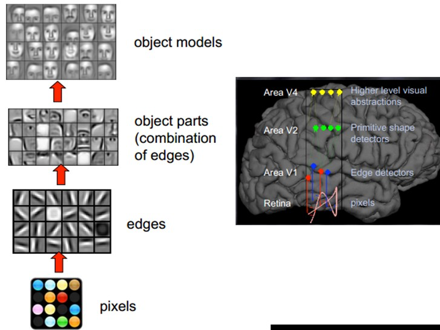这个生理学的发现，促成了计算机人工智能，在四十年后的突破性发展。总的来说，人的视觉系统的信息处理是分级的。从低级的V1区提取边缘特征，再到V2区的形状或者目标的部分等，再到更高层，整个目标、目标的行为等。也就是说高层的特征是低层特征的组合，从低层到高层的特征表示越来越抽象，越来越能表现语义或者意图。而抽象层面越高，存在的可能猜测就越少，就越利于分类。例如，单词集合和句子的对应是多对一的，句子和语义的对应又是多对一的，语义和意图的对应还是多对一的，这是个层级体系。
敏感的人注意到关键词了：分层。而深度学习（Deep Learning ，DL）的deep是不是就表示我存在多少层，也就是多深呢？没错。那Deep learning是如何借鉴这个过程的呢？毕竟是归于计算机来处理，面对的一个问题就是怎么对这个过程建模？
因为我们要学习的是特征的表达，那么关于特征，或者说关于这个层级特征，我们需要了解得更深入点。所以在说Deep Learning之前，我们有必要再啰嗦下特征。
3 关于特征¶
特征是机器学习系统的原材料，对最终模型的影响是毋庸置疑的。如果数据被很好的表达成了特征，通常线性模型就能达到满意的精度。那对于特征，我们需要考虑什么呢？
3.1 特征表示的粒度¶
学习算法在一个什么粒度上的特征表示才能发挥作用？就一个图片来说，像素级的特征根本没有价值。例如下面的摩托车，从像素级别，根本得不到任何信息，其无法进行摩托车和非摩托车的区分。而如果特征是一个具有结构性（或者说有含义）的时候，比如是否具有车把手（handle），是否具有车轮（wheel），就很容易把摩托车和非摩托车区分，学习算法才能发挥作用。
3.2 初级（浅层）特征表示¶
既然像素级的特征表示方法没有作用，那怎样的表示才有用呢？ 1995 年前后，Bruno Olshausen和 David Field 两位学者任职 Cornell University，他们试图同时用生理学和计算机的手段，双管齐下，研究视觉问题。他们收集了很多黑白风景照片，从这些照片中，提取出 \(400\) 个小碎片，每个照片碎片的尺寸均为 \(16\times 16\) 像素，不妨把这 \(400\) 个碎片标记为 \(S[i], i = 0, \dots, 399\) 。接下来，再从这些黑白风景照片中，随机提取另一个碎片，尺寸也是 \(16\times 16\) 像素，不妨把这个碎片标记为 \(T\) 。他们提出的问题是，如何从这 \(400\) 个碎片中，选取一组碎片 \(S[k]\) , 通过叠加的办法，合成出一个新的碎片，而这个新的碎片，应当与随机选择的目标碎片 \(T\) 尽可能相似，同时， \(S[k]\) 的数量尽可能少。用数学的语言来描述，就是： \(Sum_k (a[k] \times S[k]) \rightarrow T\) ,其中 \(a[k]\) 是在叠加碎片 \(S[k]\) 时的权重系数。 为解决这个问题，Bruno Olshausen和 David Field 发明了一个算法，稀疏编码（Sparse Coding）。稀疏编码是一个重复迭代的过程，每次迭代分两步： 1. 选择一组 \(S[k]\) , 然后调整 \(a[k]\) ，使得 \(Sum_k (a[k] \times S[k])\) 最接近 \(T\) 。 2. 固定住 \(a[k]\) ，在 \(400\) 个碎片中，选择其它更合适的碎片 \(S’[k]\) ，替代原先的 \(S[k]\) ，使得 \(Sum_k (a[k] \times S’[k])\) 最接近 \(T\) 。
经过几次迭代后，最佳的 S[k] 组合，被遴选出来了。令人惊奇的是，被选中的 \(S[k]\) ，基本上都是照片上不同物体的边缘线，这些线段形状相似，区别在于方向。
Bruno Olshausen和 David Field 的算法结果，与 David Hubel 和Torsten Wiesel 的生理发现不谋而合！也就是说，复杂图形，往往由一些基本结构组成。比如下图：一个图可以通过用 \(64\) 种正交的edges（可以理解成正交的基本结构）来线性表示。比如样例的 \(x\) 可以用 \(1-64\) 个edges中的三个按照 \(0.8,0.3,0.5\) 的权重调和而成。而其他基本edge没有贡献，因此均为 \(0\) 。

另外，大牛们还发现，不仅图像存在这个规律，声音也存在。他们从未标注的声音中发现了20种基本的声音结构，其余的声音可以由这20种基本结构合成。
3.3 结构性特征表示¶
小块的图形可以由基本edge组成，那么更结构化、更复杂的，具有概念性的图形如何表示呢？这就需要更高层次的特征表示，比如V2，V4。因此V1看像素级是像素级。V2看V1是像素级，这个是层次递进的，高层表达由底层表达的组合而成。专业点说就是基basis。V1取提出的basis是边缘，然后V2层是V1层这些basis的组合，这时候V2区得到的又是高一层的basis。即上一层的basis组合的结果，上上层又是上一层的组合basis……

直观上说，就是找到make sense的小patch再将其进行combine，就得到了上一层的feature，递归地向上learning feature。 在不同object上做training时，所得的edge basis 是非常相似的，但object parts和models 就会completely different了（以下图为例，那咱们分辨car或者face是不是容易多了）：

从文本来说，一个doc表示什么意思？我们描述一件事情，用什么来表示比较合适？用一个一个字吗？我看不是。字就是像素级别了，起码应该是term，换句话说每个doc都由term构成，但这样表示概念的能力就够了吗？可能也不够，需要再上一步，达到topic级，有了topic，再到doc就合理。但每个层次的数量差距很大，比如doc表示的概念->topic（千-万量级）->term（10万量级）->word（百万量级）。一个人在看一个doc的时候，眼睛看到的是word，由这些word在大脑里自动切词形成term，在按照概念组织的方式，先验的学习，得到topic，然后再进行高层次的learning。
3.4 需要有多少个特征¶
我们知道需要层次的特征构建，由浅入深，但每一层该有多少个特征呢？任何一种方法，特征越多，给出的参考信息就越多，准确性会得到提升。但特征多意味着计算复杂，探索的空间大，可以用来训练的数据在每个特征上就会稀疏，都会带来各种问题，并不一定特征越多越好。
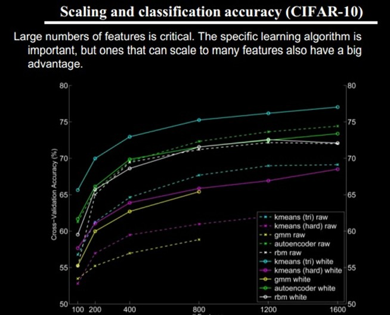好了，到了这一步，终于可以聊到深度学习（Deep Learning ，DL）了。上面我们聊到为什么会有DL（让机器自动学习良好的特征，而免去人工选取过程。还有参考人的分层视觉处理系统），我们得到一个结论就是DL需要多层来获得更抽象的特征表达。那么多少层才合适呢？用什么架构来建模呢？怎么进行非监督训练呢？
4 算法介绍¶
4.1 基本思想¶
假设我们有一个系统 \(S\) ，它有 \(n\) 层 \((S_1,\dots ,S_n)\) ，它的输入是 \(I\) ，输出是 \(O\) ，形象地表示为： \(I\rightarrow S_1 \rightarrow S_2 \rightarrow \dots \rightarrow S_n \rightarrow O\)，如果输出 \(O\) 等于输入 \(I\) ，即输入 \(I\) 经过这个系统变化之后没有任何的信息损失（大牛说，这是不可能的。信息论中有个“信息逐层丢失”的说法［信息处理不等式］，设处理 \(a\) 信息得到 \(b\) ，再对 \(b\) 处理得到 \(c\) ，那么可以证明： \(a\) 和 \(c\) 的互信息不会超过 \(a\) 和:math:b 的互信息。这表明信息处理不会增加信息，大部分处理会丢失信息。当然了，如果丢掉的是没用的信息那多好啊）——这意味着输入I⁆经过每一层 \(S_i\) 都没有任何的信息损失，即在任何一层 \(S_i\) ，它都是原有信息（即输入I）的另外一种表示。现在回到我们的主题深度学习（Deep Learning ，DL），我们需要自动地学习特征，假设我们有一堆输入 \(I\) （如一堆图像或者文本），并且我们设计了一个系统 \(S\) （有 \(n\) 层），通过调整系统中参数，使得它的输出仍然是输入 \(I\) ，那么我们就可以自动地获取得到输入 \(I\) 的一系列层次特征，即:math:S_1,dots ,S_n
对于深度学习来说，其思想就是堆叠多个层，也就是说这一层的输出作为下一层的输入。通过这种方式，就可以实现对输入信息进行分级表达了。另外，前面是假设输出严格地等于输入，这个限制太严格，我们可以略微地放松这个限制，例如我们只要使得输入与输出的差别尽可能地小即可，这个放松会导致另外一类不同的DL方法。
4.2 浅层学习（Shallow Learning）和DL¶
- 浅层学习是机器学习的第一次浪潮。
20世纪80年代末期，人工神经网络的反向传播算法（也叫 BP（Back Propagation）算法 ）的发明给机器学习带来了希望，掀起了基于统计模型的机器学习的热潮。这个热潮一直持续到今天。人们发现，利用BP算法可以让一个人工神经网络模型从大量训练样本中学习统计规律，从而对未知事件做预测。这种基于统计的机器学习方法比起过去基于人工规则的系统，在很多方面显出优越性。这个时候的人工神经网络，虽也被称作 多层感知机（Multi-layer Perceptron） ，但实际是种只含有一层隐层节点的浅层模型。20世纪90年代，各种各样的浅层机器学习模型相继被提出，例如 支持向量机（Support Vector Machines，SVM） 、 Boosting 、最大熵方法（如 逻辑回归（Logistic Regression，LR） ）等。这些模型的结构基本上可以看成带有一层隐层节点（如SVM、Boosting），或没有隐层节点（如LR）。这些模型无论是在理论分析还是应用中都获得了巨大的成功。相比之下，由于理论分析的难度大，训练方法又需要很多经验和技巧，这个时期浅层人工神经网络反而相对沉寂。
- DL是机器学习的第二次浪潮。
2006年，加拿大多伦多大学教授、机器学习领域的泰斗Geoffrey Hinton和他的学生Ruslan Salakhutdinov在《科学》上发表了一篇文章，开启了DL在学术界和工业界的浪潮。这篇文章有两个主要观点：
多隐层的人工神经网络具有优异的特征学习能力，学习得到的特征对数据有更本质的刻画，从而有利于可视化或分类；
深度神经网络在训练上的难度，可以通过“逐层初始化”（layer-wise pre-training）来有效克服，在这篇文章中，逐层初始化是通过无监督学习实现的。
当前多数分类、回归等学习方法为浅层结构算法，其局限性在于有限样本和计算单元情况下对复杂函数的表示能力有限，针对复杂分类问题其泛化能力受到一定制约。DL可通过学习一种深层非线性网络结构，实现复杂函数逼近，表征输入数据分布式表示，并展现了强大的从少数样本集中学习数据集本质特征的能力。（多层的好处是可以用较少的参数表示复杂的函数）
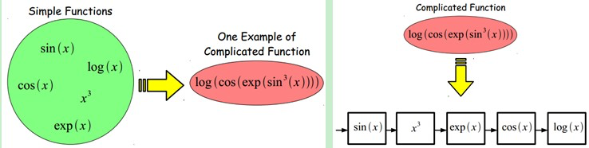DL的实质，是通过构建具有很多隐层的机器学习模型和海量的训练数据，来学习更有用的特征，从而最终提升分类或预测的准确性。因此，“深度模型”是手段，“特征学习”是目的。区别于传统的浅层学习，DL的不同在于：
强调了模型结构的深度，通常有5层、6层，甚至10多层的隐层节点；
明确突出了特征学习的重要性，也就是说，通过逐层特征变换，将样本在原空间的特征表示变换到一个新特征空间，从而使分类或预测更加容易。
与人工规则造特征的方法相比，利用大数据来学习特征，更能够刻画数据的丰富内在信息。
4.3 DL与神经网络¶
DL是机器学习研究中的一个新的领域，其动机在于建立、模拟人脑进行分析学习的神经网络，它模仿人脑的机制来解释数据，例如图像，声音和文本。DL是无监督学习的一种，其概念源于人工神经网络的研究。含多隐层的多层感知器就是一种DL结构。DL通过组合低层特征形成更加抽象的高层表示属性类别或特征，以发现数据的分布式特征表示。 DL本身算是机器学习（Machine Learning，ML）的一个分支，简单可以理解为神经网络（neural network，NN）的发展。大约二三十年前，NN曾经是ML领域特别火热的一个方向，但是后来却慢慢淡出了，原因包括以下几个方面：
比较容易过拟合，参数比较难tune，而且需要不少trick；
训练速度比较慢，在层次比较少（小于等于3）的情况下效果并不比其它方法更优；
所以中间有大约20多年的时间，神经网络被关注很少，这段时间基本上是SVM和boosting算法的天下。但是，一个痴心的老先生Hinton，他坚持了下来，并最终（和其它人一起Bengio、Yann.lecun等）提成了一个实际可行的DL框架。
DL与传统的神经网络之间有相同的地方也有很多不同。二者的 相同 在于DL采用了神经网络相似的分层结构，系统由包括输入层、隐层（多层）、输出层组成的多层网络，只有相邻层节点之间有连接，同一层以及跨层节点之间相互无连接，每一层可以看作是一个LR模型；这种分层结构，是比较接近人类大脑的结构的。

而为了克服神经网络训练中的问题，DL采用了与神经网络很不同的训练机制。传统神经网络中，采用的是back propagation的方式进行，简单来讲就是采用迭代的算法来训练整个网络，随机设定初值，计算当前网络的输出，然后根据当前输出和label之间的差去改变前面各层的参数，直到收敛（整体是一个梯度下降法）。而DL整体上是一个layer-wise的训练机制。这样做的原因是因为，如果采用back propagation的机制，对于一个deep network（7层以上），残差传播到最前面的层已经变得太小，出现所谓的gradient diffusion（梯度扩散）。这个问题我们接下来讨论。
4.4 DL训练过程¶
4.4.1 传统神经网络的训练方法为什么不能用在深度神经网络¶
BP算法作为传统训练多层网络的典型算法，实际上对仅含几层网络，该训练方法就已经很不理想。深度结构（涉及多个非线性处理单元层）非凸目标代价函数中普遍存在的局部最小是训练困难的主要来源。 BP算法存在的问题：
梯越来越稀疏：从顶层越往下，误差校正信号越来越小；
收敛到局部最小值：尤其是从远离最优区域开始的时候（随机值初始化会导致这种情况的发生）；
一般，我们只能用有标签的数据来训练：但大部分的数据是没标签的，而大脑可以从没有标签的的数据中学习；
4.4.2 DL训练过程¶
如果对所有层同时训练，时间复杂度会太高；如果每次训练一层，偏差就会逐层传递。这会面临跟上面监督学习中相反的问题，会严重欠拟合（因为深度网络的神经元和参数太多了）。
2006年，hinton提出了在非监督数据上建立多层神经网络的一个有效方法，简单的说，分为两步，一是每次训练一层网络，二是调优，使原始表示x、向上生成的高级表示r和该高级表示r向下生成的x’尽可能一致。方法是：
首先逐层构建单层神经元，这样每次都是训练一个单层网络。
当所有层训练完后，Hinton使用wake-sleep算法进行调优。
将除最顶层的其它层间的权重变为双向的，这样最顶层仍然是一个单层神经网络，而其它层则变为了图模型。向上的权重用于“认知”，向下的权重用于“生成”。然后使用Wake-Sleep算法调整所有的权重。让认知和生成达成一致，也就是保证生成的最顶层表示能够尽可能正确的复原底层的结点。比如顶层的一个结点表示人脸，那么所有人脸的图像应该激活这个结点，并且这个结果向下生成的图像应该能够表现为一个大概的人脸图像。Wake-Sleep算法分为醒（wake）和睡（sleep）两个部分。
wake阶段：认知过程，通过外的特征和向上的权重（认知权重）产生每一层的抽象表示（结点状态），并且使用梯度下降修改层间的下行权重（生成权重）。也就是“如果现实跟我想象的不一样，改变我的权重使得我想象的东西就是这样的”。
sleep阶段：生成过程，通过顶层表示（醒时学得的概念）和向下权重，生成底层的状态，同时修改层间向上的权重。也就是“如果梦中的景象不是我脑中的相应概念，改变我的认知权重使得这种景象在我看来就是这个概念”。
deep learning训练过程具体如下：
使用自下上升非监督学习（就是从底层开始，一层一层的往顶层训练）：
采用无标定数据（有标定数据也可）分层训练各层参数，这一步可以看作是一个无监督训练过程，是和传统神经网络区别最大的部分（这个过程可以看作是feature learning过程）：
具体的, 用无标定数据训练第一层，训练时先学习第一层的参数（这一层可以看作是得到一个使得输出和输入差别最小的三层神经网络的隐层），由于模型capacity的限制以及稀疏性约束，使得得到的模型能够学习到数据本身的结构，从而得到比输入更具有表示能力的特征；在学习得到第n-1层后，将n-1层的输出作为第n层的输入，训练第n层，由此分别得到各层的参数；
自顶向下的监督学习（就是通过带标签的数据集训练，误差自顶向下传输，对网络进行微调）：
基于第一步得到的各层参数进一步fine-tune整个多层模型的参数，这一步是一个有监督训练过程；第一步类似神经网络的随机初始化初值过程，由于DL的第一步不是随机初始化，而是通过学习输入数据的结构得到的，因而这个初值更接近全局最优，从而能够取得更好的效果；所以deep learning效果好很大程度上归功于第一步的feature learning过程。
5 Deep Learning的常用模型或者方法¶
5.1 AutoEncoder自动编码器¶
Deep Learning最简单的一种方法利用人工神经网络的特点，人工神经网络（ANN）本身就是具有层次结构的系统，如果给定一个神经网络，我们假设其输出与输入是相同的，然后训练调整其参数，得到每一层中的权重。自然地，我们就得到了输入I的几种不同表示（每一层代表一种表示），这些表示就是特征。自动编码器就是一种尽可能复现输入信号的神经网络。为了实现这种复现，自动编码器就必须捕捉可以代表输入数据的最重要的因素，就像PCA那样，找到可以代表原信息的主要成分。具体过程简单的说明如下：
给定无标签数据，用非监督学习学习特征：

在我们之前的神经网络中，如第一个图，我们输入的样本是有标签的，即（input, target），这样我们根据当前输出和target（label）之间的差去改变前面各层的参数，直到收敛。但现在我们只有无标签数据，也就是右边的图。那么这个误差怎么得到呢？

如上图，我们将input输入一个encoder编码器，就会得到一个code，这个code也就是输入的一个表示，那么我们怎么知道这个code表示的就是input呢？我们加一个decoder解码器，这时候decoder就会输出一个信息，那么如果输出的这个信息和一开始的输入信号input是很像的（理想情况下就是一样的），那很明显，我们就有理由相信这个code是靠谱的。所以，我们就通过调整encoder和decoder的参数，使得重构误差最小，这时候我们就得到了输入input信号的第一个表示了，也就是编码code了。因为是无标签数据，所以误差的来源就是直接重构后与原输入相比得到。

通过编码器产生特征，然后训练下一层。这样逐层训练： 上面我们得到了第一层的code，我们的重构误差最小让我们相信这个code就是原输入信号的良好表达了，或者牵强点说，它和原信号是一模一样的（表达不一样，反映的是一个东西）。那第二层和第一层的训练方式就没有差别了，我们将第一层输出的code当成第二层的输入信号，同样最小化重构误差，就会得到第二层的参数，并且得到第二层输入的code，也就是原输入信息的第二个表达了。其他层就同样的方法炮制就行了（训练这一层，前面层的参数都是固定的，并且他们的decoder已经没用了，都不需要了）。
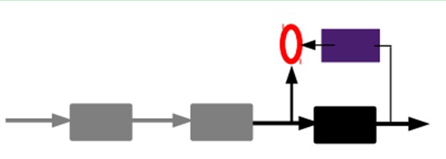有监督微调： 经过上面的方法，我们就可以得到很多层了。至于需要多少层（或者深度需要多少，这个目前本身就没有一个科学的评价方法）需要自己试验调了。每一层都会得到原始输入的不同的表达。当然了，我们觉得它是越抽象越好了，就像人的视觉系统一样。 到这里, 这个AutoEncoder还不能用来分类数据，因为它还没有学习如何去连结一个输入和一个类。它只是学会了如何去重构或者复现它的输入而已。或者说，它只是学习获得了一个可以良好代表输入的特征，这个特征可以最大程度上代表原输入信号。那么，为了实现分类，我们就可以在AutoEncoder的最顶的编码层添加一个分类器（例如逻辑回归、SVM等），然后通过标准的多层神经网络的监督训练方法（梯度下降法）去训练。
也就是说，这时候，我们需要将最后层的特征code输入到最后的分类器，通过有标签样本，通过监督学习进行微调，这也分两种，一个是只调整分类器（黑色部分）：

另一种：通过有标签样本，微调整个系统：（如果有足够多的数据，这个是最好的。end-to-end learning端对端学习）

一旦监督训练完成，这个网络就可以用来分类了。神经网络的最顶层可以作为一个线性分类器，然后我们可以用一个更好性能的分类器去取代它。
在研究中可以发现，如果在原有的特征中加入这些自动学习得到的特征可以大大提高精确度，甚至在分类问题中比目前最好的分类算法效果还要好！
AutoEncoder存在一些变体，这里简要介绍下两个：
Sparse AutoEncoder稀疏自动编码器： 当然，我们还可以继续加上一些约束条件得到新的Deep Learning方法，如：如果在AutoEncoder的基础上加上L1的Regularity限制（L1主要是约束每一层中的节点中大部分都要为0，只有少数不为0，这就是Sparse名字的来源），我们就可以得到Sparse AutoEncoder法。

如上图，其实就是限制每次得到的表达code尽量稀疏。因为稀疏的表达往往比其他的表达要有效（人脑好像也是这样的，某个输入只是刺激某些神经元，其他的大部分的神经元是受到抑制的）。
Denoising AutoEncoders降噪自动编码器： 降噪自动编码器DA是在自动编码器的基础上，训练数据加入噪声，所以自动编码器必须学习去去除这种噪声而获得真正的没有被噪声污染过的输入。因此，这就迫使编码器去学习输入信号的更加鲁棒的表达，这也是它的泛化能力比一般编码器强的原因。DA可以通过梯度下降算法去训练。

5.2 Sparse Coding稀疏编码¶
如果我们把输出必须和输入相等的限制放松，同时利用线性代数中基的概念，即 \(O = a_1\times \phi_1 + a_2\times \phi_2+ \dots+ a_n\times \phi_n\) , \(\phi_i\) 是基, \(a_i\) 是系数，我们可以得到这样一个优化问题：
其中 \(I\) 表示输入， \(O\) 表示输出。通过求解这个最优化式子，我们可以求得系数 \(a_i\) 和基 \(\phi_i\) ，这些系数和基就是输入的另外一种近似表达。
因此，它们可以用来表达输入I，这个过程也是自动学习得到的。如果我们在上述式子上加上L1的Regularity限制，得到：
这种方法被称为Sparse Coding。通俗的说，就是将一个信号表示为一组基的线性组合，而且要求只需要较少的几个基就可以将信号表示出来。“稀疏性”定义为：只有很少的几个非零元素或只有很少的几个远大于零的元素。要求系数 ai 是稀疏的意思就是说：对于一组输入向量，我们只想有尽可能少的几个系数远大于零。选择使用具有稀疏性的分量来表示我们的输入数据是有原因的，因为绝大多数的感官数据，比如自然图像，可以被表示成少量基本元素的叠加，在图像中这些基本元素可以是面或者线。同时，比如与初级视觉皮层的类比过程也因此得到了提升（人脑有大量的神经元，但对于某些图像或者边缘只有很少的神经元兴奋，其他都处于抑制状态）。
稀疏编码算法是一种无监督学习方法，它用来寻找一组“超完备”基向量来更高效地表示样本数据。虽然形如主成分分析技术（PCA）能使我们方便地找到一组“完备”基向量，但是这里我们想要做的是找到一组“超完备”基向量来表示输入向量（也就是说，基向量的个数比输入向量的维数要大）。超完备基的好处是它们能更有效地找出隐含在输入数据内部的结构与模式。然而，对于超完备基来说，系数ai不再由输入向量唯一确定。因此，在稀疏编码算法中，我们另加了一个评判标准“稀疏性”来解决因超完备而导致的退化（degeneracy）问题。（详细过程请参考：UFLDL Tutorial稀疏编码）
数据预处理¶
由于数据的强相关性, 实际训练中，数据点仅会落在分布空间中很小的区域中(特别是数据维度很高时), 而随机初始化的权重落入数据内部的概率很低，需要迭代很多次才能对数据进行有效的分割。可想而知不对数据进行预处理带来了多少运算 资源的浪费 ，而且大量的数据外分割面在迭代时很可能会在刚进入数据中时就遇到了一个局部最优，导致 overfit 的问题。
如果我们将数据减去其均值，数据点就分散开，这时一个随机分界面落入数据分布的概率增加了多少呢？2^n倍！如果我们使用去除相关性的算法（例如PCA和ZCA白化），数据不再是一个狭长的分布，随机分界面有效的概率就又大大增加了。不过计算协方差矩阵的特征值太耗时也太耗空间，我们一般最多只用到z-score处理，即每一维度减去自身均值，再除以自身标准差，这样能使数据点在每维上具有相似的宽度，可以起到一定的增大数据分布范围，进而使更多随机分界面有意义的作用。
Conv & Deconv/Transpose Conv/Fractionally Strided Conv¶
Conv¶
output size: \(\frac{n+2p-f}{s}+1\)
\(n\) 表示原图大小，\(p\) 表示padding, \(f\) 表示filer, \(s\) 表示stride
Transpose Conv¶
的参数只是原卷积的转置，并不原卷积的可逆运算 逆卷积(deconv)相对于卷积在神经网络结构的正向和反向传播中做相反的运算, deconv的参数只是原卷积的转置，并不是原卷积的可逆运算，因此转置卷积(Transposed Convolution)是一个更为合适的叫法。
x upsampling with 3x3 filter and stride of 2

Maxpooling & Unpooling¶
Unpooling: In the convnet, the max pooling operation is non-invertible, however we can obtain an approximate inverse by recording the locations of the maxima within each pooling region in a set of switch variables. In the deconvnet, the unpooling operation uses these switches to place the reconstructions from the layer above into appropriate locations, preserving the structure of the stimulus.
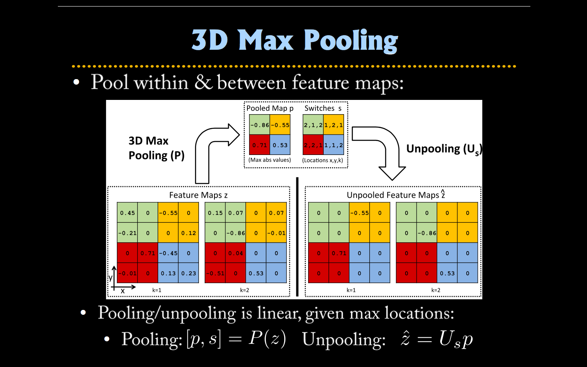
激活函数¶
When training a deep network, it is important to use a non-linear activation each hidden layer. This is because multiple layers of linear functions would itself compute only a linear function of the input (i.e., composing multiple linear functions together results in just another linear function), and thus be no more expressive than using just a single layer of hidden units.

不同激活函数¶
1、sigmoid函数¶
\[\begin{split}f(x) &=\frac{1}{1+e^{-x}} \\ f'(x) &= f(x)(1-f(x))\end{split}\]
sigmoid 激活函数及其导数¶
- sigmoid将一个实数输入映射到 \([0,1]\) 范围内，使用sigmoid作为激活函数存在以下几个问题：
无论是前向还是后向传播，计算量都相对大
梯度饱和/梯度弥散(vanishing gradient/ gradient diffusion): 在sigmoid接近饱和区时，变换太缓慢，导数趋于0，这种情况会造成信息丢失
函数输出不是以 \(0\) 为中心——而我们更偏向于当激活函数的输入是 \(0\) 时，输出也是 \(0\) 的函数。
更适用于概率问题，如rnn 等
2、tanh函数¶
\[f(x) &=\frac{e^x-e^{-x}}{e^x+e^{-x}}\]
tanh 激活函数及其导数¶
tanh函数将一个实数输入映射到 \([-1,1]\) 范围内，当输入为0时，tanh函数输出为 \(0\) ，符合我们对激活函数的要求。然而，tanh函数也存在梯度饱和问题，导致训练效率低下。
3、ReLU(Rectified Linear Unit)¶
\[f(x)=\max(0, x)\]
ReLU 激活函数及其导数¶
- 相比sigmoid和tanh函数，ReLU激活函数的优点在于(因为其分段线性性质，导致其前传，后传，求导都是分段线性)：
梯度不饱和。其梯度计算公式为： \(1\{x>0\}\) ，因此在反向传播过程中，减轻了梯度弥散的问题，神经网络前几层的参数也可以很快的更新。
计算速度快。正向传播过程中，sigmoid和tanh函数计算激活值时需要计算指数，而ReLU函数仅需要设置阈值；同时，ReLU函数的导数计算更快，程序实现就是一个if-else语句，而sigmoid函数要进行浮点四则运算。因此ReLU可以极大地加快收敛速度。(相比tanh函数，收敛速度可以加快6倍。)
relu函数在负半区的导数为0 ，所以一旦神经元激活值进入负半区，那么梯度就会为0，也就是说这个神经元不会经历训练，即所谓的稀疏性。(这点存疑： Learning activations that are sparse doesn’t really seem to matter either. Five years ago, people thought that part of why relus worked well was that they were sparse, but it turns out that all that matters is that they are piecewise linear. Maxout can beat relus in some contexts and performs about the same as relus in other contexts, and it’s not sparse at all, 进一步可 参考PReLU论文)
在生物上的合理性，它是单边的，相比sigmoid和tanh，更符合生物神经元的特征。
- 缺点:
不能用Gradient-Based方法。同时如果de-active了，容易无法再次active。不过有办法解决，使用maxout激活函数, PReLU等。或采用Xavier初始化方法，以及避免将learning rate设置太大或使用adagrad等自动调节learning rate的算法
not zero centered output
注解
使用ReLU时，要注意learning rate 的设置, learning rate 不能太高，否则可能让某些神经元达到死寂状态，不可逆转，然后就再也学不到东西了。如果要克服这点，可以用 Leaky ReLU，PReLU 或 RReLU
Relu配合的sparsity和dropout有何不同？
Relu配合使用sparsity是为了加入非线性变换(Relu本身就会输出为0)，而dropout是为了防止过拟合，同时训练多个随机的网络。
Dropout是随机的，而稀疏模型一般来说不是随机的。
ReLU 的稀疏机理和droupout 的不同，droupout 等效于动态L2规范带来的稀疏，是通过打压 weight 来实现稀疏的；ReLU 则是因为输入为零导致的，这样多层输入输出更贴近于原始高维数据层的稀疏度
4、Leaky ReLU¶
\[\begin{split}f(x) = \left\{ \begin{array}{ll} x & \textrm{if } x \ge 0 \\ 0.01x & \textrm{otherwise} \end{array} \right.\end{split}\]
Leaky ReLU 激活函数及其导数¶
理论上来讲，Leaky ReLU有ReLU的所有优点，外加不会有Dead ReLU问题，但是在实际操作当中，并没有完全证明Leaky ReLU总是好于ReLU
5、PReLU(Parametric Rectified Linear Unit)¶
\[\begin{split}f(x) = \left\{ \begin{array}{ll} x & \textrm{if } x \ge 0 \\ a_ix & \textrm{otherwise} \end{array} \right.\end{split}\]注解
更新 \(a_i\) 时不施加权重衰减(L2正则化)，因为这会把 \(a_i\) 很大程度上push到0。事实上，即使不加正则化，试验中 \(a_i\) 也很少有超过1的。
\(a_i\) 被初始化为0.25
7、ELU(Exponential Linear Units)¶
\[\begin{split}f(x) = \left\{ \begin{array}{ll} x & \textrm{if } x \ge 0 \\ \alpha (e^x-1) & \textrm{otherwise} \end{array} \right.\end{split}\]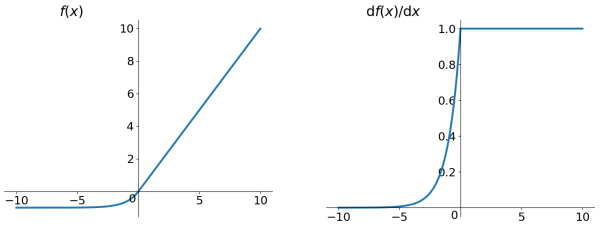ELU 激活函数及其导数¶
ELU也是为解决ReLU存在的问题而提出，显然，ELU有ReLU的基本所有优点，以及：
不会有Dead ReLU问题
输出的均值接近0，zero-centered
它的一个小问题在于计算量稍大。类似于Leaky ReLU，理论上虽然好于ReLU，但在实际使用中目前并没有好的证据ELU总是优于ReLU。
8、Maxout¶
- 关于线性：
便于优化的优点以外，分段线性函数可以让regularize变得更加容易
线性强的激活函数更容易找到全局极优, 有个日本人理论证明了纯线性激活函数的局部极优解全都是全局最优解(段放)
- 关于稀疏性的好处有：
信息解离：相当于将高度耦合的变量解耦，这样表示就能容忍噪声从而更具鲁棒性；
信息容量可变的表示：如果input信息量大，那么会有很多神经元active以保存这些信息；而如果input信息量小，那么就会有很多神经元inactive。这也是variable-size data structure，机器学习模型中，变量多了怕过拟合，变量不够怕欠拟合。这里提供了一种解决思路。
线性可分：低维到高维从而分类，这不正是SVM想做的？
稀疏分布式表示：2个0-1变量的4种可能组合，n个0-1变量有2^n种组合。n越大，表现力就越强。
- 关于梯度变化:
你如果仔细看back propagation这个算法在深度网络中的求导，会发现大量的W相乘，如果det(W)>1随着网络加深，gradient explosion，如果det(W)<1随着网络加深，W连乘越来越多，gradient vanishing…所以用relu，max(0,a), 间接regularize gradient.
- 关于 zero-centered:
会导致模型训练的收敛速度变慢。举例来讲，对 \(\sigma(\sum_i w_i x_i + b)\) ，如果所有 \(x_i\) 均为正数或负数，那么其对 \(w_i\) 的导数总是正数或负数，这会导致如下图红色箭头所示的阶梯式更新，这显然并非一个好的优化路径。所以，总体上来讲，训练深度学习网络尽量使用zero-centered数据 (可以经过数据预处理实现) 和zero-centered输出。 参考
反向传播算法¶
1 公式推导¶
注解
以下推导基于单样本
令 \(w_{jk}^l\) 表示第 \(l−1\) 层第 \(k\) 个单元到第 \(l\) 层第 \(j\) 个单元之间的 连接权值 ， \(b_j^l\) 、 \(a_j^l\) 、\(z_j^l\) 分别表示第 \(l\) 层第 \(j\) 个单元的 偏置项 、 激活值 和 输入加权和 ，如下图所示：
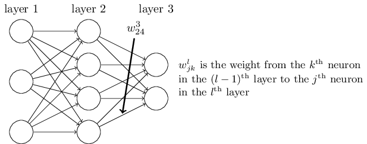
则神经网络的计算步骤（前向传播步骤）如下：
\(z_j^l=\sum_k w_{jk}^l a_k^{l-1} +b_j^l\)
\(z^l=w^la^{l-1} +b^l\)
\(a_j^l=\sigma(z_j^l)=\sigma\left (\sum_k w_{jk}^la_k^{l-1}+b_j^l\right)\)
\(a^l=\sigma\left( w^la^{l-1}+b^l\right)\)
为了计算损失函数对 \(w_{jk}^l\) 和 \(b_j^l\) 的偏导，先引入 \(\delta_j^l\) 表示 \(l\) 层第 \(j\) 个神经元的残差： \(\delta_j^l=\frac{\partial C}{\partial z_j^l}\) , 根据链式法则（chain rule），输出层的误差可表示为：
(1)¶\[\begin{split}\delta_j^L &=\frac{\partial C}{\partial z_j^L} \\ &=\sum_k \frac{\partial C}{\partial a_k^L} \frac{\partial a_k^L}{\partial z_j^L}\\ &=\frac{\partial C}{\partial a_j^L} \frac{\partial a_j^L}{\partial z_j^L}\\ &=\frac{\partial C}{\partial a_j^L} \sigma'(z_j^L)\\\end{split}\]上式也可以写为： \(\delta^L =\nabla_a C\odot \sigma'(z^L)\) ，采用不同损失函数或激活函数时, (1) 的表达有所不同:
C为二次代价函数
C为交叉熵
softmax layer
\(\delta^L =(a^L-y) \odot \sigma'(z^L)\)
\(\delta^L =(a^L-y)\)
\(\delta^L =(a^L-y)\)
对于任意一层（非输出层），在已知其下一层误差时，其误差可表示为：
(2)¶\[\begin{split}\delta_j^l &=\frac{\partial C}{\partial z_j^l} \\ &=\sum_k \frac{\partial C}{\partial z_k^{l+1}} \frac{\partial z_k^{l+1}}{\partial z_j^l}\\ &=\sum_k \frac{\partial z_k^{l+1}}{\partial z_j^l}\delta_k^{l+1}\\ &=\sum_k w_{kj}^{l+1}\delta_k^{l+1}\sigma'(z_j^l)\end{split}\]注解
上式中 \(z_k^{l+1}=\sum_j w_{kj}^{l+1}a_j^l+b_k^{l+1}=\sum_j w_{kj}^{l+1}\sigma(z_j^l)+b_k^{l+1}\)
上式也可表示为: \(\delta^l =((w^{l+1})^T\sigma ^{l+1})\odot \sigma'(z^L)\)
根据上述两个式子，我们从最后一层起，可以逆向计算出任意一层的误差 \(\delta_j^l\) 。据此可计算出损失函数对 \(w_{jk}^l\) 和 \(b_j^l\) 的偏导如下：
(3)¶\[\begin{split}\frac{\partial C}{\partial b_j^l}&=\frac{\partial C}{\partial z_j^l} \frac{\partial z_j^l}{\partial b_j^l} \\&=\frac{\partial C}{\partial z_j^l}\\ &=\delta_j^l\end{split}\](4)¶\[\begin{split}\frac{\partial C}{\partial w_{jk}^l}&=\frac{\partial C}{\partial z_j^l} \frac{\partial z_j^l}{\partial w_{jk}^l} \\&=\frac{\partial C}{\partial z_j^l} a_k^{l-1}\\ &=a_k^{l-1} \delta_j^l\end{split}\]注解
当L2规则化时， \(\frac{\partial C}{\partial w_{jk}^l}=a_k^{l-1} \delta_j^l+\lambda w_{jk}^l\)


过饱和问题¶
过饱和，即，会造成学习速度慢。
以sigmoid函数（logistic neurons）为例，当 \(x\) 的绝对值变大时，函数值越来越平滑，趋于饱和，这个时候函数的导数趋于 \(0\) 。为了让神经网络学习得快一些，我们希望激活函数sigmoid的导数较大。 从数值上，大约让sigmoid的输入在 \([-4,4]\) 之间即可，见 fig_1 。 我们知道，一个神经元j的输入是由前一层神经元的输出的加权和，因此，我们可以通过控制权重参数初始值的范围，使得神经元的输入落在我们需要的范围内。
1 输出层过饱和问题¶
1.1 改变损失函数¶
\[C=-\frac{1}{n}\sum_x\sum_j\left[y_j\ln a_j^L+(1-y_j)\ln (1-a_j^L)\right]\]
1.2 改变激活函数¶
使用 softmax output layer，ReLU
2 隐含层过饱和问题¶
2.1 权重和偏置量的初始化方法¶
1、将权重初始化为均值 \(0\) ，方差 \(1/\sqrt{n_{in}}\) 的高斯分布；偏置量为均值 \(0\) ，方差为 \(1\) 的高斯分布。（提速的同时也会改善效果？后文说明）
2、权重初始化为 \(\left [ -\frac{1}{\sqrt{n_{in}}}, \frac{1}{\sqrt{n_{in}}} \right]\) 的均匀随机取值。（其中 \(n_{in}\) 是一个神经元的输入量）
注解
为了说明这样取值的合理性，先简单回顾一下几点基本知识：
符合均匀分布 \(U(a,b)\) 的随机变量的数学期望和方差分别是： \(E(x)=\frac{a+b}{2}\) 、 \(D(x)=\frac{(b−a)^2}{12}\)
如果随机变量 \(X\) 、 \(Y\) 是相互独立的，那么 \(Var(X+Y)=Var(X)+Var(Y)\) ，如果二者相互独立且均值为 \(0\) ，那么 \(Var(X\times Y)=Var(X)\times Var(Y)\)
因此，如果限制经元的输入信号 \((x_i)\) 均值为 \(0\) ，标准差为 \(1\) ，那么
\[Var(w_i)=(\frac{2}{\sqrt{n_{in}}})^2/12=\frac{1}{3n_{in}}\]\[Var(\sum_{i=1}^{n_{in}}w_ix_i)=n_{in}\times Var(w_i)=\frac{1}{3}\]也就是说，随机的 \(n_{in}\) 个输入信号加权——其中权重分布如上，服从均值为 \(0\) ，方差为 \(1/3\) 的正态分布，且与 \(n_{in}\) 无关。所以神经元的输入落在区间 \([−4,4]\) 的概率非常小。更一般的形式为：
\[\sum_{i=0}^{n_{in}}<w_ix_i>=\sum_{i=0}^{n_{in}}<w_i><x_i>=0\]\[\left<\left(\sum_{i=0}^{n_{in}}w_ix_i\right)\left(\sum_{i=0}^{n_{in}}w_ix_i\right)\right>=\sum_{i=0}^{n_{in}}<w_i^2><x_i^2>=\sigma^2n_{in}\]3、权重参数初始化从区间均匀随机取值
- Hiden layer 权重的初始化 Xavier10 ：对称区间上的均匀采样，区间的选择根据激活函数确定：
当选用tanh时， \(\left [ -\sqrt{\frac{6}{n_{in}+n_{out}}}, \sqrt{\frac{6}{n_{in}+n_{out}}}\right]\)
当选用sigmoid时， \(\left [ -4\sqrt{\frac{6}{n_{in}+n_{out}}}, 4\sqrt{\frac{6}{n_{in}+n_{out}}}\right]\)
其中， \(n_{in}\) 和 \(n_{out}\) 分别表示前一层和本层的神经元个数。这样的初始化能保证在训练初期，激活函数的信息能容易向前后传输而不至于过饱和。
小技巧
theano中CNN的fan_out 怎么算的？
4、其他场景的初始值方法[2]（[2] Bengio, Yoshua. “Practical recommendations for gradient-based training of deep architectures.” Neural Networks: Tricks of the Trade. Springer Berlin Heidelberg, 2012. 437-478.）
in the case of RBMs, a zero-mean Gaussian with a small standard deviation around 0.1 or 0.01 works well (Hinton, 2010) to initialize the weights.
Orthogonal random matrix initialization, i.e. W = np.random.randn(ndim, ndim); u, s, v = np.linalg.svd(W) then use u as your initialization matrix.
2.2 更换激励函数¶
ReLU、maxout
解决overfitting问题¶
1 L1/L2 规则化(regularization)¶
基本思路 是减小不重要的参数对结果的影响而有用的权重则不会受到Weight decay的影响,这种思路与Dropout的思路原理上十分相似。
给代价函数加上一项 规则化项 (regularization term):
\[C=C_0+\lambda \Vert \theta \Vert_p^p\]其中， \(\Vert \theta \Vert_p^p = \left ( \sum_{j=0}^{|\theta |} |\theta_j|^p\right)^{\frac{1}{p}}\) 是 \(\theta\) 的 \(L_p\) 范数， \(\lambda>0\) 是规则化参数(regularization parameter)，控制着规则化参数的相对重要性。这项技术其实就是对最小化损失函数与寻找小的权重这二个问题的折中(the network prefers to learn small weight, large weights will only be allowed if they considerably improve the first part of the cost function)。二者的相对重要性取决于 \(\lambda\) ——小的时候更希望最小化损失函数，大的时候希望取得小的权重。 \(p\) 通常取为1和2
- 为什么这种妥协可以解决过拟合？
小的权重意味着小的输入改变不会造成大的输出改变，也就是说，网络学习的是训练集中的普遍规则；而大的权重意味着小的输入改变会造成大的输出改变，也就是说，网络学习的是带有噪声影响的较为复杂的模型h。显然前者就是权重的衰减做的事，这可以强制网络学习简单规则而忽略噪声，从而减轻过拟合。这并不能完全解释，但作为一种解释。
- 为什么偏置量的大小不考虑？
偏置量的大小并不会造成输出对输入的敏感，因此不考虑。但大的偏置量会使得神经元容易饱和——这其实是我们希望的，因此一般不将其纳入规则化。
这个方法还有一个优势，就是其结果的可重复性。未规则化的损失函数可能陷入极小值——这往往取决于初始权重的设置，但规则化后就可以避免这个问题，因此结果也往往相近。
1.1 权重衰减(weight decay)/L2规则化¶
给代价函数加上一项规则化项：
交叉熵 |
\(C=-\frac{1}{n}\sum_{x_j}\left[ y_j\ln a_j^L+(1-y_j)\ln (1-a_j^L) \right ]+\frac{\lambda}{2n}\sum_ww^2\) |
均方差 |
\(C=\frac{1}{2n}\sum_x\Vert y-a^L \Vert ^2+\frac{\lambda}{2n}\sum_ww^2\) |
2 early-stopping¶
通过监控模型在validation 数据集上的性能（如显著性差异（statistical significance）等）来及时停止优化过程。当模型在validation 数据上的性能不再提升，或者随着优化过程甚至降低了性能，就停止优化步骤。
The validation_frequency should always be smaller than thepatience. The code should check at least two times how it performs before running out of patience.
3 dropout¶
3.1 原版¶
Improving neural networks by preventing co-adaptation of feature detectors by Geoffrey Hinton, Nitish Srivastava, Alex Krizhevsky, Ilya Sutskever, and Ruslan Salakhutdinov (2012).
ImageNet Classification with Deep Convolutional Neural Networks by Alex Krizhevsky, Ilya Sutskever, and Geoffrey Hinton (2012).
随机抽取隐含层的一半训练网络（每个神经元被移除的概率是50%），然后不断重复这个过程。这一方法类似于对同一批数据训练不同的网络再做平均，换句话说，它是训练一个在缺少某些输入时依旧鲁棒的网络，类似L1/2 规则化的思路，因此可以消除过拟合。
警告
droupout让隐含层的某些神经元权重不工作，这些神经元可以暂时认为不是网络的一部分，但权值保留下来（只是暂时不更新而已，因为下一次可能又工作了）[好像不对！]
在代码实现层面，以前我们网络的计算公式是：
\[\begin{split}z^l=w^la^{l-1}+b^l \\ a^l=\sigma\left (w^la^{l-1}+b^l \right)\end{split}\]
采用dropout后计算公式就变成了：
\[\begin{split}r_j^l\sim Bernoulli(p) \\ \tilde{a}^l=r^l\odot a^l \\ z^l=w^l\tilde{a}^{l-1}+b^l \\ a^l=\sigma\left (w^la^{l-1}+b^l \right)\end{split}\]
上面公式中Bernoulli函数，是为了以概率 \(p\) ，随机生成一个 \(0\) 、 \(1\) 的向量。算法具体实现如下：
让某个神经元以概率p停止工作，即让它的激活值以概率p变为0。
在屏蔽掉某些神经元使其激活值为0以后，还需要对向量 \(\tilde{a}^l\) 进行rescale，即乘以 \(1/(1−p)\) 。如果在训练阶段，经过置 \(0\) 后没有进行rescale，那么在测试的时候，就需要对权重进行rescale，即乘以 \(p\)。
具体可参考 keras的dropout实现源码 ，其dropout所在的文件为: theano_backend.py
- 为什么经过dropout需要进行rescale？
前面说过，dropout类似于平均网络模型。假设我们在训练阶段训练了 \(1000\) 个网络，每个网络生成的概率为 \(p_i\) ，那么在测试阶段，我们肯定要把这 \(1000\) 个网络的输出结果都计算一遍，将这 \(1000\) 个输出乘以各自的概率求得期望值，这个期望值才是最后的结果。所以在测试阶段（不采用dropout），我们就需要对所有的元素网络所得到的输出做一个期望。事实上，由于我们在测试时不做任何的参数丢弃，dropout layer 把进来的东西原样输出，导致在统计意义下，测试时 每层 dropout layer的输出比训练时的输出多加了 \([(1-p)\times 100]\) % units 的输出。 即 \([p\times 100]\) % 个units 的和 是同训练时随机采样得到的子网络的输出一致，另 \([(1-p)\times 100]\) % 的units的和 是本来应该扔掉但是又在测试阶段被保留下来的。所以，为了使得dropout layer 下一层的输入和训练时具有相同的“意义”和“数量级”，我们要对测试时的伪dropout layer的输出（即下层的输入）做 rescale，表示最后的sum中只有这么大的概率，或者这么多的部分被保留。这样一来，只要一次测试，将原 \(2^n\) 个子网络的参数全部考虑进来了，并且最后的 rescale 保证了后面一层的输入仍然符合相应的物理意义和数量级。
3.2 maxout¶
ICML2013，by Goodfellow
maxout其实是一种激发函数形式。通常情况下，如果激发函数采用sigmoid函数的话，在前向传播过程中，隐含层节点的输出表达式为：
其中 \(\mathit{W}\) 一般是 \(2\) 维的，这里表示取出的是第 \(i\) 列，下标i前的省略号表示对应第 \(i\) 列中的所有行。但如果是maxout激发函数，则其隐含层节点的输出表达式为：
其中 \(z_{ij} = x^T\mathit{W}_{\dots ij} + b_ij\) ， \(\mathit{W} \in \mathbb{R}^{d\times m \times k}\)
这里的 \(\mathit{W}\) 是 \(3\) 维的，尺寸为 \(d\times m\times k\) ，其中 \(d\) 表示输入层节点的个数， \(m\) 表示隐含层节点的个数， \(k\) 表示每个隐含层节点对应了 \(k\) 个”隐隐含层”节点，这 \(k\) 个”隐隐含层”节点都是线性输出的，而maxout的每个节点就是取这 \(k\) 个”隐隐含层”节点输出值中最大的那个值。因为激发函数中有了max操作，所以整个maxout网络也是一种非线性的变换。因此当我们看到常规结构的神经网络时，如果它使用了maxout激发，则我们头脑中应该自动将这个”隐隐含层”节点加入。参考 一个日文的maxout ppt 中的一页ppt如下：
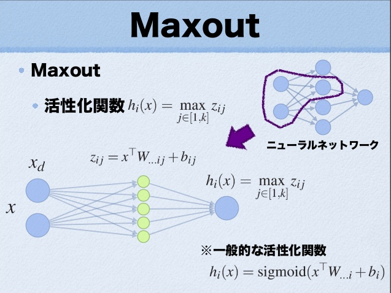
maxout的拟合能力是非常强的，它可以拟合任意的的凸函数。最直观的解释就是任意的凸函数都可以由分段线性函数以任意精度拟合（学过高等数学应该能明白），而maxout又是取 \(k\) 个隐隐含层节点的最大值，这些”隐隐含层”节点也是线性的，所以在不同的取值范围下，最大值也可以看做是分段线性的（分段的个数与 \(k\) 值有关）。论文中的图1如下（它表达的意思就是可以拟合任意凸函数，当然也包括了ReLU了）：
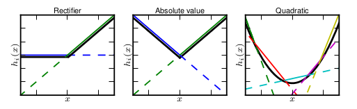
作者从数学的角度上也证明了这个结论，即只需2个maxout节点就可以拟合任意的凸函数了（相减），前提是”隐隐含层”节点的个数可以任意多，如下图所示：

3.3 DropConnect¶
ICML2013
和maxout一样，DropConnect也是为了提高Deep Network的泛化能力的，两者都号称是对Dropout的改进。
我们知道，Droupout是在训练过程中以一定概率 \(1-p\) 将隐含层节点的输出值清 \(0\) ，而用bp更新权值时，不再更新与该节点相连的权值。用公式描述如下：
\[r = m. \times a(Wv)\]
其中 \(v\) 是 \(n\times 1\) 维的列向量， \(W\) 是 \(d\times n\) 维的矩阵， \(m\) 是个 ;math:dtimes 1 的 \(01\) 列向量， \(a(x)\) 是一个满足 \(a(0)=0\) 的激发函数形式。这里的 \(m\) 和 \(a(Wv)\) 相乘是对应元素的相乘。
而DropConnect的思想也很简单，与Dropout不同的是，它不是随机将隐含层节点的输出清0，而是将节点中的每个与其相连的输入权值以 \(1-p\) 的概率清 \(0\) （一个是输出，一个是输入），其表达式如下：
\[r = a((M.\times W)v)\]
两者的区别从下图基本可以看明白：

下面主要来看DropConnect的trainning和inference两部分。
- training部分
training部分和Dropout的training部分很相似，不过在使用DropConnect时，需要对每个example、 每个echo都随机sample一个 \(M\) 矩阵（元素值都是 \(0\) 或 \(1\) , 俗称mask矩阵）。算法流程如下：

警告
因为DropConnect只能用于全连接的网络层（和dropout一样），如果网络中用到了卷积，则用patch卷积时的隐层节点是不使用DropConnect的，因此上面的流程里有一个Extract feature步骤，该步骤就是网络前面那些非全连接层的传播过程，比如卷积+pooling.
- inference部分
DropConnect的inference部分和Dropout不同，在Dropout网络中进行inference时，是将所有的权重 :math:mathit{W} 都scale一个系数 \(p\) （作者证明这种近似在某些场合是有问题的，具体见其paper）。而在对DropConnect进行推理时，采用的是对每个输入（每个隐含层节点连接有多个输入）的权重进行高斯分布的采样。该高斯分布的均值与方差当然与前面的概率值 \(p\) 有关，满足的高斯分布为：
\[u \sim \mathcal{N}(pWv, p(1-p)(W.\times W)(v.\times v))\]
inference过程如下：

由上面的过程可知，在进行inference时，需要对每个权重都进行sample，所以DropConnect速度会慢些。
根据作者的观点，Dropout和DropConnect都类似模型平均，Dropout是 \(2^|m|\) 个模型的平均，而DropConnect是 \(2^|M|\) 个模型的平均（ \(m\) 是向量，\(M\) 是矩阵，取模表示矩阵或向量中对应元素的个数），从这点上来说，DropConnect模型平均能力更强（因为 \(|M|>|m|\) ）。
DropConnect源代码可以在作者项目主页 DropConnect project page. 上下载，不过需要用到Cuda。
4 batch_normalization¶
在每层 \(Wx+b\) 之后进行归一化, Normalization完成后，再加入了两个参数gamma和beta（这两个参数通过学习得到）
注解
像卷积层这样具有权值共享的层，Wx+b的均值和方差是对整张map求得的，在batch_size * channel * height * width这么大的一层中，对总共batch_size*height*width个像素点统计得到一个均值和一个标准差，共得到channel组参数
优点：
可以使用更高的学习率。如果每层的scale不一致，实际上每层需要的学习率是不一样的，同一层不同维度的scale往往也需要不同大小的学习率，通常需要使用最小的那个学习率才能保证损失函数有效下降，Batch Normalization将每层、每维的scale保持一致，那么我们就可以直接使用较高的学习率进行优化。
移除或使用较低的dropout。 dropout是常用的防止overfitting的方法，而导致overfit的位置往往在数据边界处(边界处数据的损失函数相对较大，对学习的影响大于数据中心的点，但边界数据量小于数据中心的数据量，因此这个说法有待商榷)，如果初始化权重就已经落在数据内部，overfit现象就可以得到一定的缓解。论文中最后的模型分别使用10%、5%和0%的dropout训练模型，与之前的40%-50%相比，可以大大提高训练速度。
降低L2权重衰减系数。 还是一样的问题，边界处的局部最优往往有几维的权重（斜率）较大，使用L2衰减可以缓解这一问题，现在用了Batch Normalization，就可以把这个值降低了，论文中降低为原来的5倍。
取消Local Response Normalization层。 由于使用了一种Normalization，再使用LRN就显得没那么必要了。而且LRN实际上也没那么work。
减少图像扭曲的使用。 由于现在训练epoch数降低，所以要对输入数据少做一些扭曲，让神经网络多看看真实的数据。
DL 中的优化方法¶
On optimization methods for deep learning
SGD优点：实现简单，当训练样本足够多时优化速度非常快。
SGD缺点：需要人为调整很多参数，比如学习率，收敛准则等。另外，它是序列的方法，不利于GPU并行或分布式处理。
各种deep learning中常见方法（比如说Autoencoder，RBM，DBN，ICA，Sparse coding）的区别是：目标函数形式不同。这其实才是最本质的区别，由于目标函数的不同导致了对其优化的方法也可能会不同，比如说RBM中目标函数跟网络能量有关，采用CD优化的，而Autoencoder目标函数为理论输出和实际输出的MSE，由于此时的目标函数的偏导可以直接被计算，所以可以用LBFGS，CG等方法优化，其它的类似。所以不能单从网络的结构来判断其属于Deep learning中的哪种方法。
不同的优化算法有不同的优缺点，适合不同的场合，比如LBFGS算法在参数的维度比较低（一般指小于10000维）时的效果要比SGD和CG效果好，特别是带有convolution的模型。而针对高维的参数问题，CG的效果要比另2种好。也就是说一般情况下，SGD的效果要差一些，这种情况在使用GPU加速时情况一样，即在GPU上使用LBFGS和CG时，优化速度明显加快，而SGD算法优化速度提高很小。在单核处理器上，LBFGS的优势主要是利用参数之间的2阶近似特性来加速优化，而CG则得得益于参数之间的共轭信息，需要计算器Hessian矩阵。不过当使用一个大的minibatch且采用线搜索的话，SGD的优化性能也会提高。
Adagrad
Adadelta
RMSprop
Adam
网络模型变化¶

2012年AlexNet做出历史突破以来，直到GoogLeNet出来之前，主流的网络结构突破大致是网络更深（层数），网络更宽（神经元数）。所以大家调侃深度学习为“深度调参”，但是纯粹的增大网络的缺点：???
那么解决上述问题的方法当然就是增加网络深度和宽度的同时减少参数，Inception就是在这样的情况下应运而生。
Inception (google）¶
achieve very good performance at relatively low computational cost
- V1
将1x1，3x3，5x5的conv和3x3的pooling，堆叠在一起，一方面增加了网络的width，另一方面增加了网络对尺度的适应性; 在3x3前，5x5前，max pooling后分别加上了1x1的卷积核起到了降低特征图厚度的作用
 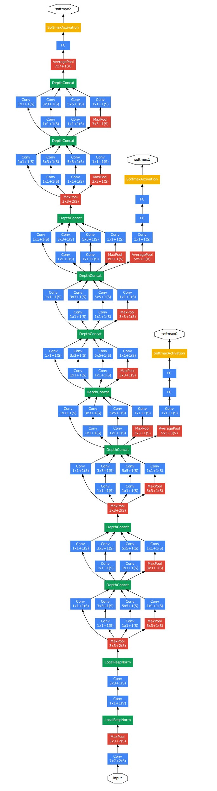
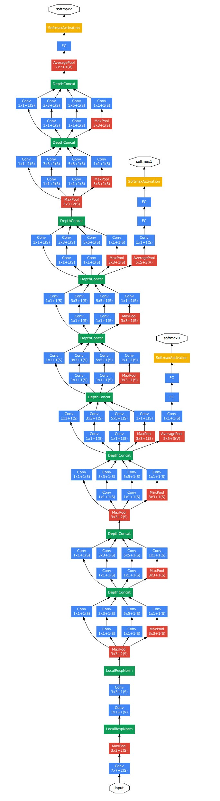
- V2
V1 的基础上加入batch normalization(BN）层, 减少了Internal Covariate Shift（内部neuron的数据分布发生变化），使每一层的输出都规范化到一个N(0, 1)的高斯；另外一方面学习VGG用2个3x3的conv替代inception模块中的5x5，既降低了参数数量，也加速计算。

使用3×3的已经很小了，那么更小的2×2呢？2×2虽然能使得参数进一步降低，但是不如另一种方式更加有效，那就是Asymmetric方式，即使用1×3和3×1两种来代替3×3的卷积核。这种结构在前几层效果不太好，但对特征图大小为12~20的中间层效果明显。

- V3
分解(factorization) 的思路。将7x7分解成两个一维的卷积（1x7,7x1），3x3也是一样（1x3,3x1），这样的好处，既可以加速计算（多余的计算能力可以用来加深网络），又可以将1个conv拆成2个conv，使得网络深度进一步增加，增加了网络的非线性，还有值得注意的地方是网络输入从224x224变为了299x299，更加精细设计了35x35/17x17/8x8的模块。
- V4
v4研究了Inception模块结合Residual Connection能不能有改进？发现ResNet的结构可以极大地加速训练，同时性能也有提升，得到一个Inception-ResNet v2网络，同时还设计了一个更深更优化的Inception v4模型，能达到与Inception-ResNet v2相媲美的性能
- Inception-ResNet-v1
V3 + Residual Connection
- Inception-ResNet-v2
V4 + Residual Connection
- Xception
depthwise separable convolution, 这里每个block内的卷积结果不经过relu，block的结果经过relu
Residual (Microsoft)¶
training with residual connections accelerates the training of Inception networks significantly
深度残差学习
- ResNetXt
提出来 cardinality 的概念, 卷积的group 操作
MobileNet(google)¶
depthwise separable convolution, 卷积操作后都会跟一个Batchnorm和ReLU操作
在基本不影响准确率的前提下大大减少计算时间（约为原来的1/9）和参数数量（约为原来的1/7）
ShuffleNet¶
channel shuffle、pointwise group convolutions和depthwise separable convolution来修改原来的ResNet单元来构成ShuffleNet unit, 达到了减少计算量和提高准确率的目的。channel shuffle解决了多个group convolution叠加出现的边界效应，pointwise group convolution和depthwise separable convolution主要减少了计算量。
Highway Network¶
解决网络深度加深，梯度信息回流受阻造成的网络训练困难
方法：受LSTM技术启发，采用门技术——增加 T(Transform) 门和C(Carry) 门，控制信息的流动
调试经验¶
Must Know Tips/Tricks in Deep Neural Networks
在全连接层较小的时候，使用dropout 并不会提升效果，可能导致无法学习
loss 函数无法下降，可能是 lr 太小或太大。
数据预处可能出现的问题： 1) flip 等变换后标记不一致, 2) 坐标起始看程序中运算， 3) 坐标 out of border， 4) 归一化参考位置, 5) 图像长宽比过大时，resize 后rpn 问题, 6) 前景背景及非二者, 7) 灰度图／彩色图
对程序中出现 nan 等异常的处理，eg: proposal_layer._filter_bbox 的 ws, hs 处理
训练测试时的输入不一致需注意，eg：landmark 基于 rpn 而非 det